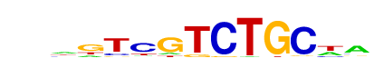

| p-value: | 1e-55 |
| log p-value: | -1.272e+02 |
| Information Content per bp: | 1.673 |
| Number of Target Sequences with motif | 106.0 |
| Percentage of Target Sequences with motif | 6.30% |
| Number of Background Sequences with motif | 383.9 |
| Percentage of Background Sequences with motif | 0.84% |
| Average Position of motif in Targets | 43.7 +/- 18.3bp |
| Average Position of motif in Background | 52.0 +/- 34.3bp |
| Strand Bias (log2 ratio + to - strand density) | 10.0 |
| Multiplicity (# of sites on avg that occur together) | 1.06 |
| Motif File: | file (matrix) reverse opposite |
| Rank | Match Score | Redundant Motif | P-value | log P-value | % of Targets | % of Background | Motif file |
| 1 | 0.715 |  | 1e-53 | -122.046529 | 20.62% | 8.46% | motif file (matrix) |
| 2 | 0.891 | 1e-50 | -116.517011 | 5.76% | 0.77% | motif file (matrix) | |
| 3 | 0.911 | 1e-39 | -90.602747 | 4.81% | 0.71% | motif file (matrix) | |
| 4 | 0.918 | 1e-38 | -87.666581 | 3.62% | 0.38% | motif file (matrix) | |
| 5 | 0.650 | 1e-32 | -75.343590 | 25.07% | 13.99% | motif file (matrix) | |
| 6 | 0.956 | 1e-29 | -66.798275 | 2.97% | 0.35% | motif file (matrix) | |
| 7 | 0.838 | 1e-26 | -62.038051 | 5.35% | 1.33% | motif file (matrix) | |
| 8 | 0.780 | 1e-15 | -35.288904 | 10.40% | 5.42% | motif file (matrix) | |
| 9 | 0.637 | 1e-13 | -31.925076 | 4.40% | 1.57% | motif file (matrix) |